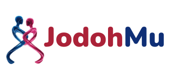
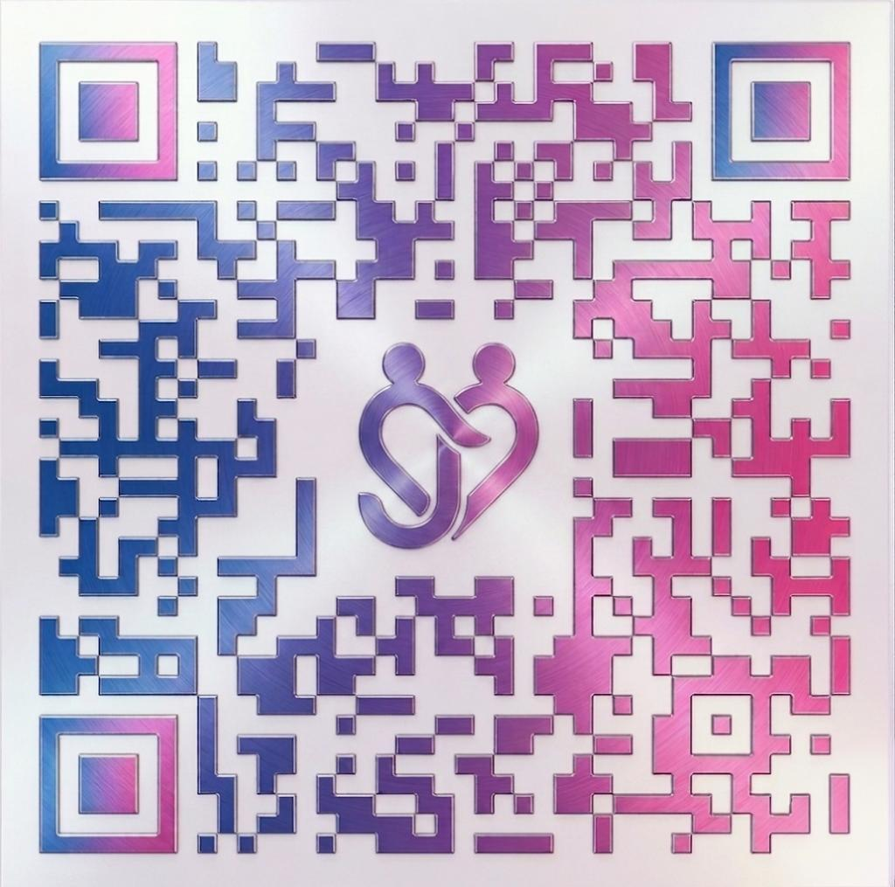

Kami membangun sistem pernikahan yang bermartabat. Kami tidak bisa sendiri — mari kita bangun bersama.
Jodohmu adalah sistemnya. Kami butuh Anda menjadi jembatan bagi mereka yang membutuhkannya.
Anda tidak perlu menjadi mak comblang. Cukup mengenal seseorang yang membutuhkan bantuan — dan cukup peduli untuk mengarahkan mereka.
Setiap referral yang berhasil bukan sekadar komisi — itu satu keluarga yang terbantu, satu keputusan besar yang terjawab dengan baik.
Detail apresiasi dan komisi kami jelaskan langsung — bukan karena ada yang disembunyikan, tapi karena Anda layak mendapat kejelasan penuh sejak awal.
Struktur komisi dirancang untuk menghargai mitra yang menghubungkan kami dengan orang yang tepat. Detail dibagikan saat percakapan onboarding.
Setiap referral tercatat. Anda selalu tahu statusnya melalui komunikasi langsung dengan staf kami.
"Kami tidak menjelaskan komisi lewat slide bukan karena ada yang disembunyikan — tapi karena Anda layak mendapat kejelasan langsung."
Anda membuat koneksinya. Jodohmu yang menangani sisanya — dengan penuh perhatian dan rasa hormat.
Nama Anda disebut dengan penuh hormat setiap kali kami menghubungi referral Anda. Kami menjaga hubungan Anda dengan mereka — selalu.

Membuka formulir pendaftaran langsung di ponsel Anda
Percakapan singkat dengan tim kami — tanpa tekanan, tanpa kewajiban
Diskusikan bagaimana kemitraan ini bisa berjalan untuk Anda
Mulai menghubungkan orang di jaringan Anda ke proses yang bisa mereka percaya